Daftar Isi
1. Login ke PAS
- Buka alamat PAS kampus melalui browser.
- Masukkan NIDN atau email dosen.
- Masukkan password lalu klik Login.
- Centang Tetap masuk sampai logout manual hanya pada perangkat pribadi.
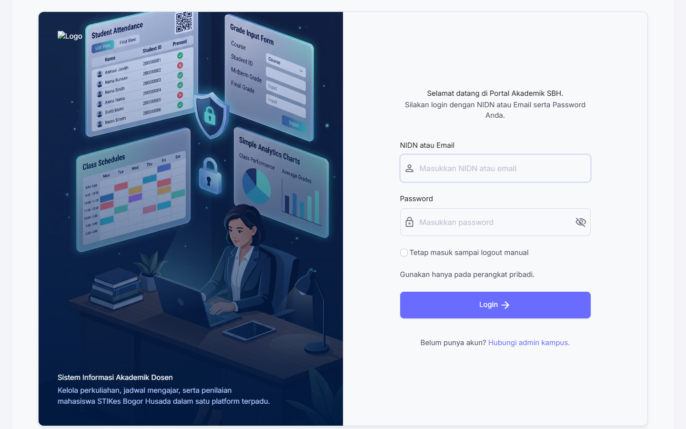
2. Dashboard Dosen
Dashboard menampilkan ringkasan kelas yang diajar, mahasiswa bimbingan, hasil EDOM, aktivitas LMS, serta pintasan menuju nilai, jadwal, dan evaluasi.
- Periksa Tahun Akademik aktif sebelum mengelola perkuliahan.
- Buka panel Aktivitas LMS untuk melihat pengumpulan tugas dan penyelesaian kuis terbaru.
- Perhatikan notifikasi pengajaran jika suatu mata kuliah belum mempunyai pertemuan pada minggu berjalan.
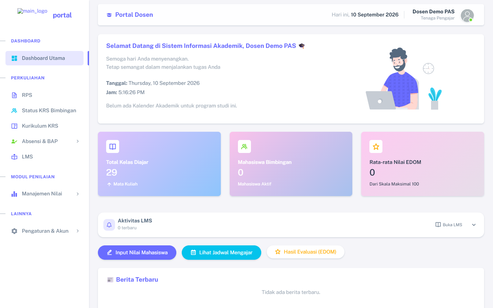
3. Jadwal Mengajar dan Pertemuan
- Klik Lihat Jadwal Mengajar dari dashboard.
- Pilih jadwal sesuai mata kuliah, prodi, semester, dan kelas Reguler A/B.
- Buka mata kuliah, lalu buat pertemuan sesuai kegiatan yang benar-benar berlangsung.
- Isi tanggal, waktu, materi/topik, serta metode PBM Online atau Offline.
- Simpan pertemuan. Pertemuan tersebut menjadi dasar absensi, BAP, LMS, dan laporan pengajaran.
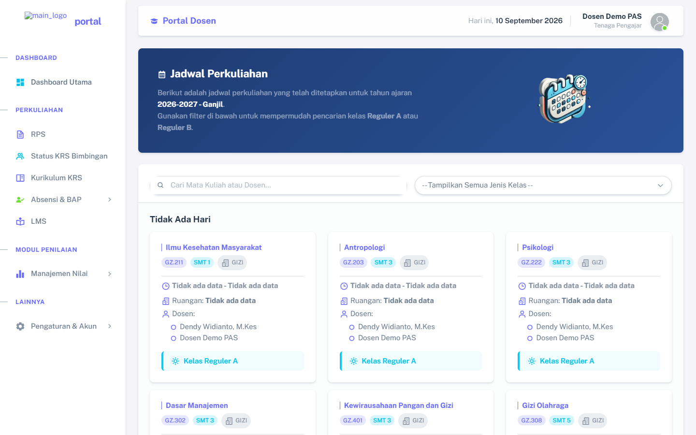
4. Rencana Pembelajaran Semester (RPS)
- Buka menu RPS.
- Cari mata kuliah berdasarkan nama, prodi, semester, atau kelas.
- Klik Upload jika belum ada file, atau Upload Ulang untuk mengganti file saat ini.
- Periksa informasi file aktif, pilih PDF baru, lalu simpan.
- Klik Lihat untuk memastikan dokumen dapat dibuka.
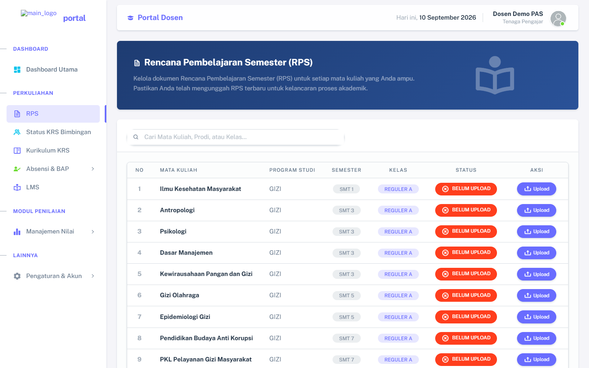
5. KRS Mahasiswa Bimbingan
5.1 Memeriksa dan Menyetujui KRS
- Buka Status KRS Bimbingan.
- Gunakan pencarian dan filter untuk menemukan mahasiswa.
- Klik Lihat KRS untuk memeriksa mata kuliah, semester, kelas, dan total SKS.
- Perhatikan pembanding SKS kurikulum. Sistem menampilkan kekurangan jika SKS yang dipilih belum sesuai.
- Berikan komentar bila perlu, kemudian lakukan ACC langsung dari detail.
- Gunakan Bulk ACC hanya setelah seluruh mahasiswa terpilih sudah diperiksa.
Dosen dapat membatalkan persetujuan untuk koreksi, lalu melakukan ACC ulang setelah KRS diperbaiki. Mahasiswa dapat membalas komentar dosen melalui halaman Status KRS.
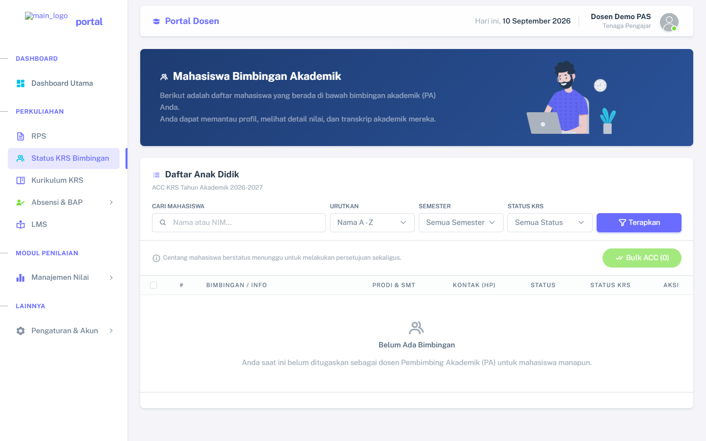
5.2 Kurikulum KRS
Menu Kurikulum KRS menjadi acuan mata kuliah dan SKS yang seharusnya diambil mahasiswa berdasarkan program studi, semester, serta jenis kelas.
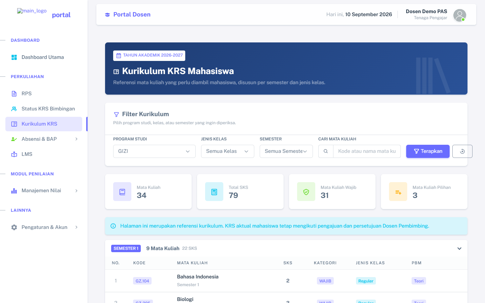
6. Absensi dan BAP
6.1 Absensi Teori
- Buka Absensi & BAP → Absensi Teori.
- Buka kelompok semester, lalu pilih kartu mata kuliah yang tepat.
- Pilih pertemuan yang telah dibuat dari jadwal.
- Isi status setiap mahasiswa: H (Hadir), S (Sakit), I (Izin), atau A (Alfa).
- Simpan dan periksa kembali rekapnya.
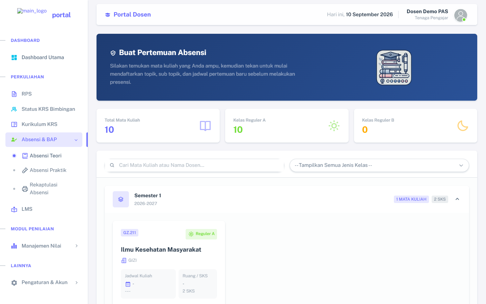
6.2 Absensi Praktik
Gunakan Absensi Praktik untuk jadwal yang ditugaskan sebagai pengajaran praktik. Alurnya sama, tetapi peserta dan laporannya mengikuti kelas praktik terkait.
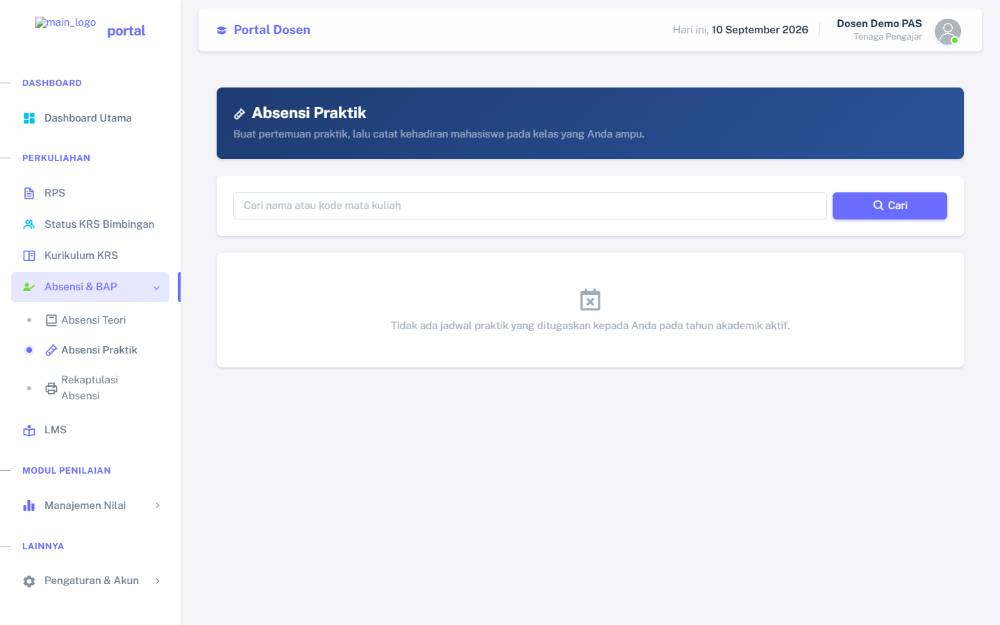
6.3 Rekapitulasi dan Laporan
Buka Rekapitulasi Absensi, pilih mata kuliah dan prodi, lalu cetak laporan. Kolom P menampilkan tanggal pertemuan; Alfa ditandai huruf A berwarna merah. PDF menyediakan bagian tanda tangan dosen pengampu dan Kaprodi. Setelah Kaprodi memverifikasi, laporan menampilkan penanda Telah diverifikasi Kaprodi.
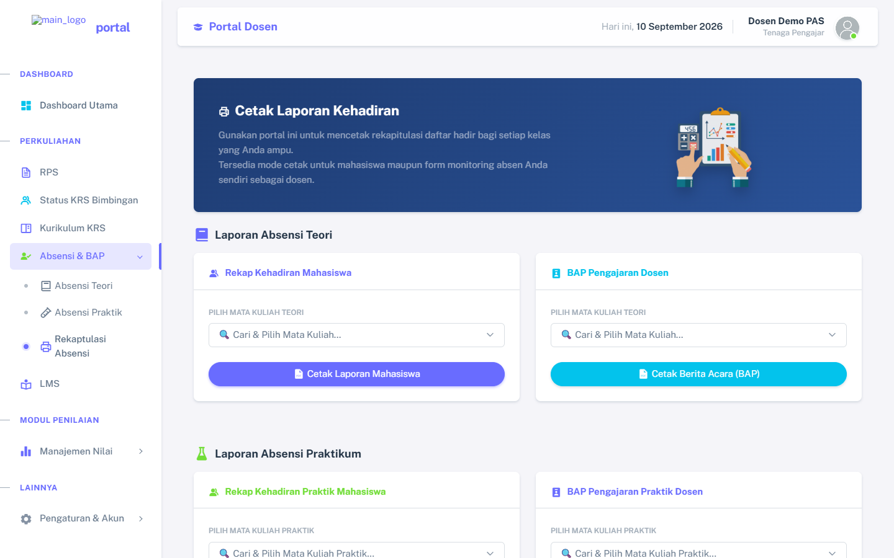
7. Learning Management System (LMS)
7.1 Membuka Kelas
Buka menu LMS. Kartu kelas menampilkan mata kuliah, program studi, semester, kelas, jadwal, ruang, dan SKS. Gunakan pencarian atau kelompok semester lalu klik Buka/Kelola Kelas.
Kalender LMS merangkum unggahan materi, tenggat tugas, kuis/ujian, dan catatan pribadi. Catatan pribadi hanya dapat dilihat oleh akun yang membuatnya.
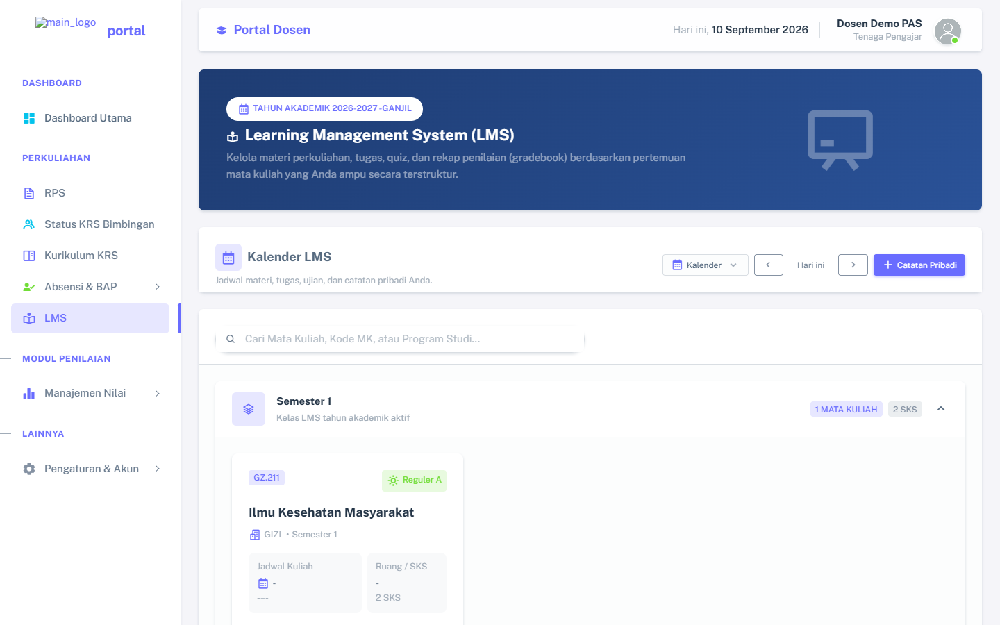
7.2 Mengelola Pertemuan, Materi, Tugas, dan Kuis
- Materi: unggah file/gambar atau tambahkan tautan, termasuk video pembelajaran.
- Tugas: tentukan judul, instruksi, tenggat, serta bentuk jawaban. Tugas pilihan ganda mendukung pilihan A–E.
- Kuis/Ujian: buat soal pilihan ganda A–E atau esai. Urutan soal diacak untuk setiap mahasiswa.
- Esai: mahasiswa dapat menulis langsung atau mengunggah file sesuai pengaturan.
- Collapse: buka/tutup setiap pertemuan agar halaman lebih ringkas.
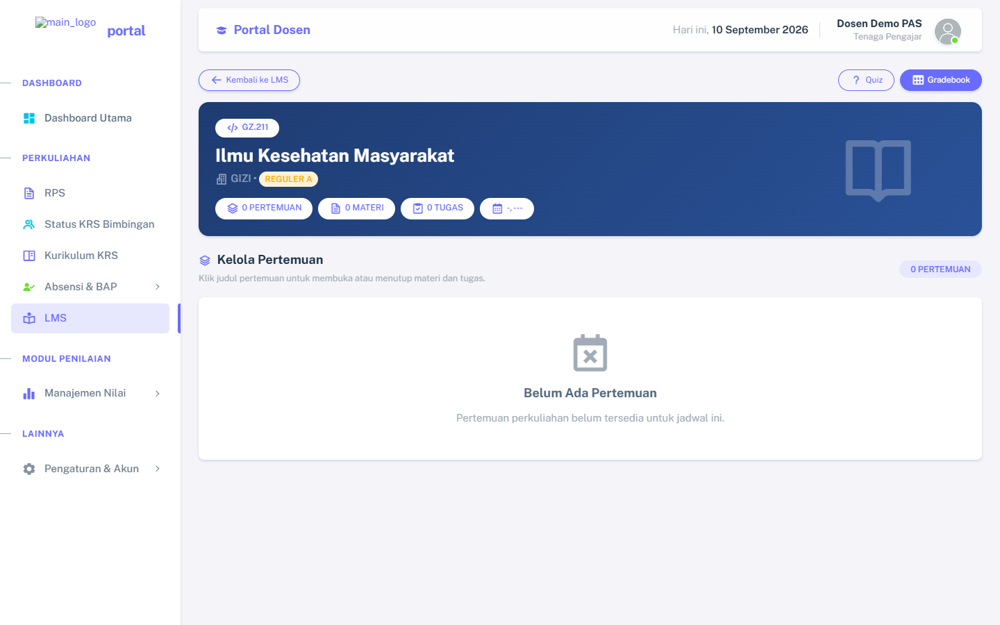
7.3 Pengumpulan dan Gradebook
- Buka daftar pengumpulan tugas atau hasil kuis.
- Klik Lihat untuk memeriksa isi/file sebelum mengunduh.
- Berikan nilai dan umpan balik, kemudian simpan.
- Gunakan Gradebook untuk merekap nilai per mata kuliah.
- Ekspor Gradebook ke Excel atau PDF bila diperlukan.
Nilai LMS dapat dikonversi ke komponen Nilai KHS mengikuti persentase akademik yang ditetapkan pada tabel nilai.
8. Input Nilai KHS Mahasiswa
- Buka Manajemen Nilai → Input Nilai Mahasiswa.
- Pilih Tahun Akademik, mata kuliah, program studi, semester, dan kelas yang tepat.
- Masukkan komponen nilai. Nilai absolut dihitung otomatis tetapi tetap dapat disesuaikan sesuai kewenangan.
- Periksa seluruh mahasiswa, kemudian simpan.
- Ajukan nilai kepada Kaprodi untuk diverifikasi.
Setelah diverifikasi Kaprodi, nilai menunggu penerbitan BAAK sebelum dapat dilihat mahasiswa pada KHS.
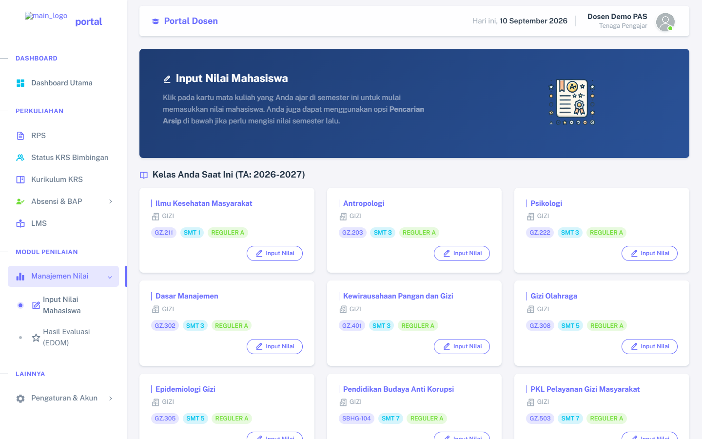
9. Hasil EDOM
Buka Manajemen Nilai → Hasil EDOM untuk melihat hasil evaluasi pada Tahun Akademik aktif. Dosen hanya melihat komentar mahasiswa tanpa identitas pemberi komentar.
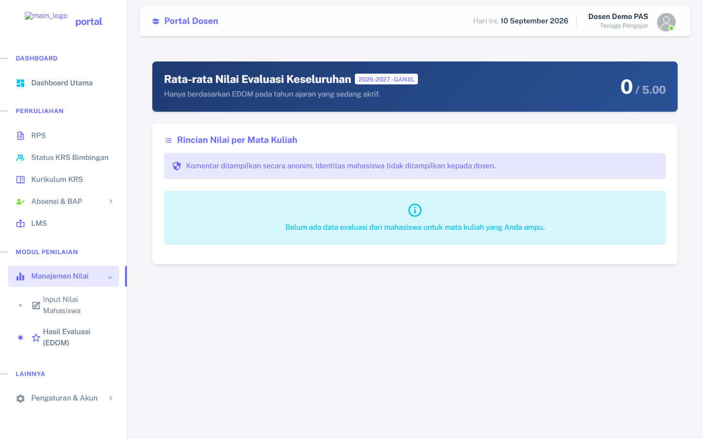
10. Helpdesk, Profil, dan Logout
10.1 Helpdesk
Buka Pengaturan & Akun → Helpdesk. Isi judul, kategori, dan uraian kendala dengan jelas. Permintaan dikirim langsung kepada admin melalui PAS.
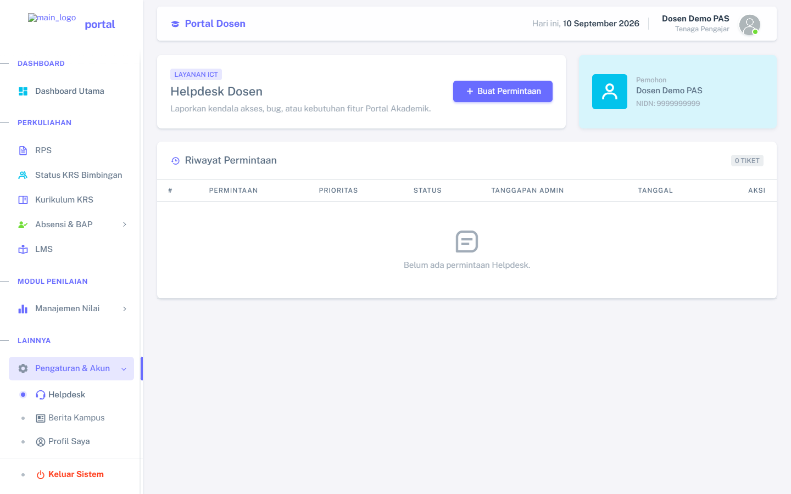
10.2 Profil dan Logout
Buka Profil untuk memeriksa atau memperbarui informasi yang diizinkan. Jika data utama seperti NIDN, kode dosen, atau program studi tidak sesuai, hubungi admin. Gunakan tombol Logout untuk mengakhiri sesi.
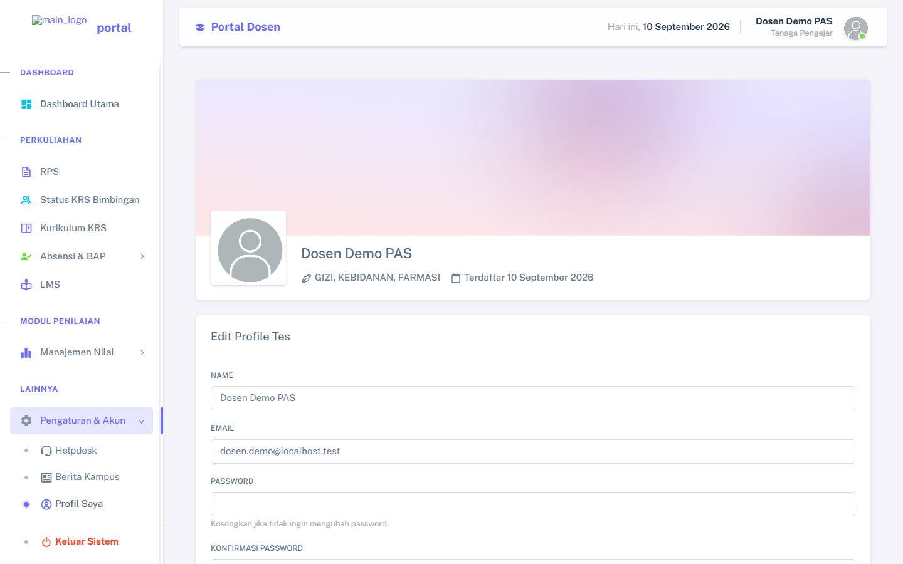
11. Fitur Khusus Akun Kaprodi
Menu Kaprodi hanya muncul pada dosen yang ditetapkan sebagai Kaprodi oleh admin.
- Monitoring Dosen: memantau progres pengajaran, RPS, KRS, dan EDOM dosen seprogram studi.
- Rekap Absensi: meninjau lalu memverifikasi laporan absensi satu per satu atau secara massal.
- Pengajuan Nilai: memeriksa dan memverifikasi nilai yang diajukan dosen satu per satu atau secara massal.
12. Penanganan Masalah Umum
- Jika sesi berakhir, login kembali; sistem akan memberi pemberitahuan bahwa Anda telah logout.
- Jika mata kuliah tidak muncul, periksa penugasan dosen, Tahun Akademik, prodi, semester, kelas, dan jenis teori/praktik.
- Jika peserta LMS/tugas tidak sesuai, periksa kelas Reguler A/B mahasiswa dan penugasan kelas mata kuliah.
- Jika pertemuan belum muncul di absensi, pastikan pertemuan sudah dibuat dari jadwal yang sesuai.
- Jika file RPS atau materi tidak dapat dibuka, laporkan nama mata kuliah, nama file, dan pesan error melalui Helpdesk.
- Jika tampilan tidak berubah setelah pembaruan, lakukan refresh dengan Ctrl + F5.
- Jangan membagikan password atau menggunakan akun dosen lain.